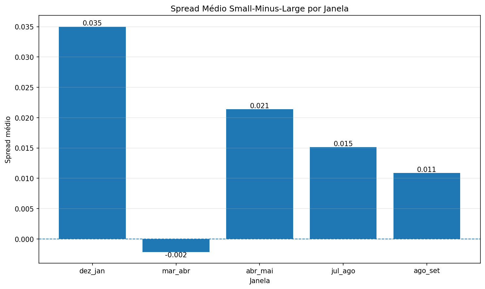
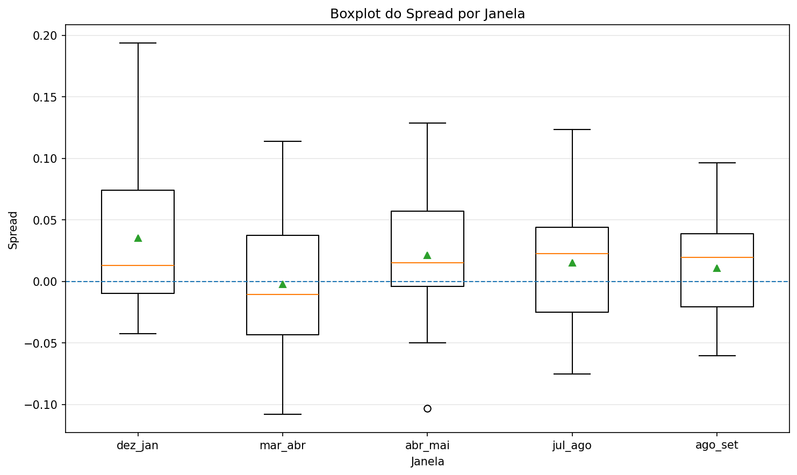
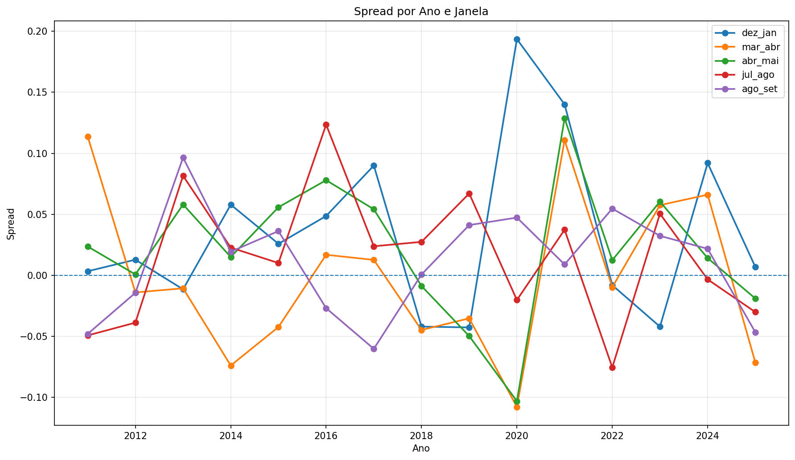
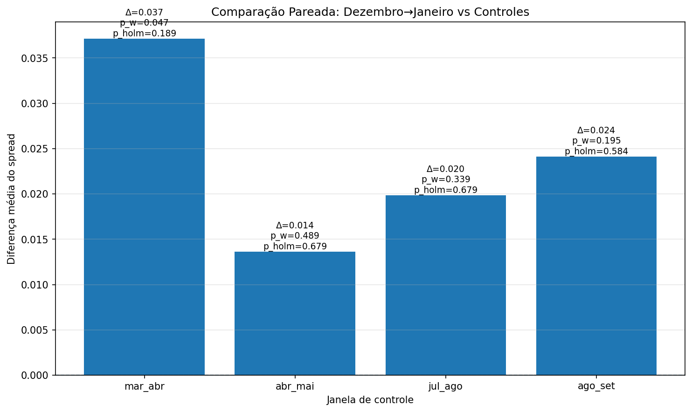
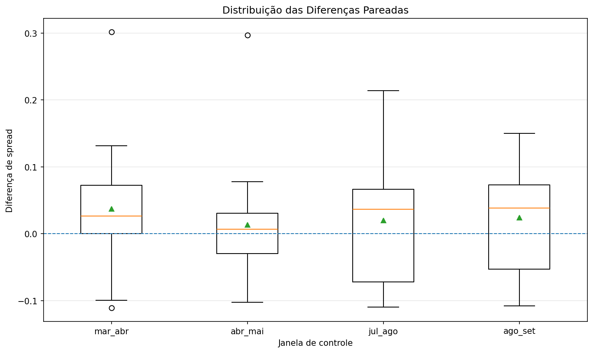

Efeito Janeiro no Brasil
Uma análise empírica do desempenho relativo entre ações de menor liquidez e maior liquidez no mercado acionário brasileiro.
O estudo utiliza liquidez como proxy de tamanho e combina evidência econômica, testes estatísticos e comparações com janelas de controle ao longo do ano.
Resumo Executivo
Este projeto investiga a existência do efeito janeiro no mercado acionário brasileiro, comparando o desempenho relativo entre ações de menor liquidez e maior liquidez.
A liquidez é utilizada como proxy de tamanho, e não como market cap observado diretamente. O foco central do estudo é verificar se a janela dezembro→janeiro apresenta um spread small-minus-large economicamente relevante e como esse comportamento se compara a janelas de controle em outros períodos do ano.
Key Takeaways
Maior spread médio na virada do ano
A janela dezembro→janeiro apresentou spread médio de 0.035, positivo em 66.7% dos anos analisados.
Sinal estatístico favorável contra zero
Na janela principal, os testes contra zero resultaram em p_t=0.0356 e p_perm=0.0363.
Comparação com controles mais fraca
A comparação mais favorável foi contra mar_abr, com diferença média de 0.037, mas sem robustez após ajuste de Holm.
Evidência mais plausível que definitiva
Os resultados sustentam um padrão economicamente interessante para a janela dezembro→janeiro, mas não uma superioridade estatística forte e estável sobre todas as janelas de controle.
Introdução
Contexto do efeito janeiro, proxy utilizada e objetivo da análise.
O chamado efeito janeiro é uma das anomalias sazonais mais conhecidas da literatura financeira. Em linhas gerais, a hipótese sugere que ações menores ou menos negociadas tendem a apresentar desempenho relativamente superior na virada do ano.
Como esta base não utiliza market cap histórico consolidado para todo o período, o estudo adota a liquidez média de novembro como proxy de tamanho. Assim, a leitura correta do projeto não é “small caps medidas diretamente por capitalização”, mas sim uma comparação entre ações de menor liquidez e ações de maior liquidez.
O objetivo central não é apenas verificar se o spread small-minus-large é positivo em dezembro→janeiro, mas também se essa janela se destaca frente a janelas de controle como março→abril, abril→maio, julho→agosto e agosto→setembro.
Metodologia
Construção das carteiras, definição das janelas e testes utilizados.
A base foi construída com dados históricos por ticker, contendo data, preço ajustado e volume financeiro. Para cada ano da amostra, foi calculada a liquidez média de novembro, utilizada como critério de classificação dos ativos.
- Small caps proxy por liquidez: bottom 30% em liquidez
- Large caps proxy por liquidez: top 30% em liquidez
- Faixa central: excluída para aumentar o contraste entre os grupos
A janela principal foi definida entre o primeiro pregão após meados de dezembro e o último pregão útil de janeiro. Além disso, foram construídas janelas de controle ao longo do ano para avaliar se o comportamento de dezembro→janeiro se destaca em relação a outros períodos.
A análise estatística foi estruturada em duas camadas:
- Testes contra zero, avaliando se o spread da janela é positivo;
- Testes pareados, comparando dez_jan com cada janela de controle ano a ano.
Foram utilizados:
- Teste t unilateral e teste de permutação contra zero;
- Wilcoxon pareado unilateral e permutação pareada para a hipótese central;
- Ajuste de Holm nas comparações múltiplas contra as janelas de controle.
Esse desenho permite separar duas perguntas diferentes: se a janela principal é positiva em si mesma e se ela realmente se destaca em relação às janelas de controle.
Tabelas
Tabelas principais da amostra, das janelas, dos testes e das comparações pareadas.
Base e Formação das Carteiras
Amostra Anual de Ativos Elegíveis
| ano | n_empresas | liquidez_media |
|---|---|---|
| 2011 | 246 | 18,689,324.489603 |
| 2012 | 258 | 21,316,504.367817 |
| 2013 | 253 | 23,715,471.848912 |
| 2014 | 247 | 22,342,507.440689 |
| 2015 | 254 | 20,163,222.411436 |
| 2016 | 225 | 34,106,275.424739 |
| 2017 | 256 | 31,123,697.678786 |
| 2018 | 273 | 46,732,041.943836 |
| 2019 | 288 | 54,599,821.960055 |
| 2020 | 313 | 88,097,998.199722 |
| 2021 | 345 | 70,165,749.335943 |
| 2022 | 359 | 80,438,643.104114 |
| 2023 | 345 | 61,535,458.400950 |
| 2024 | 342 | 58,307,015.999506 |
| 2025 | 324 | 61,624,093.760620 |
Retornos das Carteiras na Janela Principal
| ano | large | small | spread_small_minus_large | n_small | n_large |
|---|---|---|---|---|---|
| 2011 | -0.031594 | -0.025558 | 0.006036 | 73 | 73 |
| 2012 | 0.085510 | 0.090151 | 0.004641 | 77 | 77 |
| 2013 | 0.029233 | 0.012623 | -0.016610 | 75 | 75 |
| 2014 | -0.048711 | -0.000309 | 0.048402 | 74 | 74 |
| 2015 | -0.022156 | -0.012170 | 0.009986 | 76 | 76 |
| 2016 | -0.096363 | -0.027754 | 0.068610 | 67 | 67 |
| 2017 | 0.126276 | 0.203522 | 0.077246 | 76 | 76 |
| 2018 | 0.132813 | 0.083854 | -0.048959 | 81 | 81 |
| 2019 | 0.164028 | 0.196234 | 0.032206 | 86 | 86 |
| 2020 | 0.069710 | 0.217661 | 0.147951 | 93 | 93 |
| 2021 | 0.013148 | 0.060361 | 0.047213 | 103 | 103 |
| 2022 | 0.028190 | -0.008445 | -0.036635 | 107 | 107 |
| 2023 | 0.126359 | 0.062399 | -0.063960 | 103 | 103 |
| 2024 | -0.030720 | 0.046558 | 0.077278 | 102 | 102 |
| 2025 | 0.032213 | 0.030712 | -0.001501 | 97 | 97 |
Base Consolidada das Janelas
| ano | janela | large | small | spread_small_minus_large | n_small | n_large |
|---|---|---|---|---|---|---|
| 2011 | dez_jan | -0.032215 | -0.028858 | 0.003357 | 75 | 75 |
| 2012 | dez_jan | 0.073720 | 0.086551 | 0.012832 | 81 | 81 |
| 2013 | dez_jan | 0.027527 | 0.016087 | -0.011440 | 76 | 76 |
| 2014 | dez_jan | -0.056566 | 0.001381 | 0.057947 | 75 | 75 |
| 2015 | dez_jan | -0.044850 | -0.019002 | 0.025849 | 77 | 77 |
| 2016 | dez_jan | -0.088068 | -0.039431 | 0.048637 | 69 | 69 |
| 2017 | dez_jan | 0.131164 | 0.221131 | 0.089967 | 77 | 77 |
| 2018 | dez_jan | 0.128258 | 0.086252 | -0.042006 | 82 | 82 |
| 2019 | dez_jan | 0.151821 | 0.109163 | -0.042658 | 88 | 88 |
| 2020 | dez_jan | 0.050129 | 0.243731 | 0.193602 | 94 | 94 |
| 2021 | dez_jan | -0.014682 | 0.125427 | 0.140109 | 106 | 106 |
| 2022 | dez_jan | 0.014029 | 0.005985 | -0.008044 | 112 | 112 |
| 2023 | dez_jan | 0.114245 | 0.072187 | -0.042058 | 105 | 105 |
| 2024 | dez_jan | -0.036850 | 0.055173 | 0.092023 | 105 | 105 |
| 2025 | dez_jan | 0.025086 | 0.031936 | 0.006849 | 99 | 99 |
| 2011 | mar_abr | 0.021807 | 0.135652 | 0.113845 | 75 | 75 |
| 2012 | mar_abr | -0.034123 | -0.048116 | -0.013993 | 76 | 76 |
| 2013 | mar_abr | -0.018844 | -0.029464 | -0.010619 | 77 | 77 |
| 2014 | mar_abr | 0.122865 | 0.048974 | -0.073891 | 76 | 76 |
| 2015 | mar_abr | 0.134411 | 0.092080 | -0.042331 | 75 | 75 |
| 2016 | mar_abr | 0.168364 | 0.185216 | 0.016852 | 69 | 69 |
| 2017 | mar_abr | -0.000895 | 0.011759 | 0.012653 | 73 | 73 |
| 2018 | mar_abr | 0.008508 | -0.036255 | -0.044763 | 79 | 79 |
| 2019 | mar_abr | -0.019366 | -0.054607 | -0.035241 | 87 | 87 |
| 2020 | mar_abr | 0.128468 | 0.020637 | -0.107831 | 90 | 90 |
| 2021 | mar_abr | 0.071758 | 0.182462 | 0.110704 | 103 | 103 |
| 2022 | mar_abr | 0.027183 | 0.017495 | -0.009688 | 108 | 108 |
| 2023 | mar_abr | 0.001180 | 0.058717 | 0.057537 | 104 | 104 |
| 2024 | mar_abr | -0.045867 | 0.020232 | 0.066099 | 101 | 101 |
| 2025 | mar_abr | 0.084460 | 0.013054 | -0.071406 | 98 | 98 |
| 2011 | abr_mai | 0.003879 | 0.027512 | 0.023634 | 75 | 75 |
| 2012 | abr_mai | -0.088687 | -0.087937 | 0.000750 | 76 | 76 |
| 2013 | abr_mai | 0.020607 | 0.078680 | 0.058073 | 77 | 77 |
| 2014 | abr_mai | 0.023731 | 0.038782 | 0.015050 | 76 | 76 |
| 2015 | abr_mai | -0.028632 | 0.027170 | 0.055802 | 74 | 74 |
| 2016 | abr_mai | -0.069053 | 0.008937 | 0.077990 | 73 | 73 |
| 2017 | abr_mai | -0.001934 | 0.052212 | 0.054145 | 75 | 75 |
| 2018 | abr_mai | -0.068936 | -0.077686 | -0.008750 | 81 | 81 |
| 2019 | abr_mai | 0.050750 | 0.001011 | -0.049740 | 85 | 85 |
| 2020 | abr_mai | 0.113519 | 0.010443 | -0.103075 | 93 | 93 |
| 2021 | abr_mai | 0.056561 | 0.185203 | 0.128642 | 104 | 104 |
| 2022 | abr_mai | -0.059269 | -0.046827 | 0.012442 | 111 | 111 |
| 2023 | abr_mai | 0.101239 | 0.161677 | 0.060437 | 105 | 105 |
| 2024 | abr_mai | -0.039658 | -0.025489 | 0.014170 | 101 | 101 |
| 2025 | abr_mai | 0.092966 | 0.073992 | -0.018974 | 100 | 100 |
| 2011 | jul_ago | -0.025317 | -0.074535 | -0.049218 | 74 | 74 |
| 2012 | jul_ago | 0.094227 | 0.055451 | -0.038776 | 72 | 72 |
| 2013 | jul_ago | 0.040061 | 0.121667 | 0.081606 | 75 | 75 |
| 2014 | jul_ago | 0.054349 | 0.077078 | 0.022729 | 77 | 77 |
| 2015 | jul_ago | -0.153462 | -0.143353 | 0.010110 | 71 | 71 |
| 2016 | jul_ago | 0.061121 | 0.184642 | 0.123521 | 71 | 71 |
| 2017 | jul_ago | 0.077830 | 0.101658 | 0.023828 | 75 | 75 |
| 2018 | jul_ago | -0.010885 | 0.016559 | 0.027444 | 81 | 81 |
| 2019 | jul_ago | 0.014241 | 0.081327 | 0.067086 | 87 | 87 |
| 2020 | jul_ago | 0.002745 | -0.017467 | -0.020212 | 96 | 96 |
| 2021 | jul_ago | -0.083161 | -0.045766 | 0.037395 | 99 | 99 |
| 2022 | jul_ago | 0.148867 | 0.073425 | -0.075442 | 110 | 110 |
| 2023 | jul_ago | -0.054423 | -0.003905 | 0.050518 | 103 | 103 |
| 2024 | jul_ago | 0.023079 | 0.019772 | -0.003307 | 102 | 102 |
| 2025 | jul_ago | 0.044192 | 0.014114 | -0.030078 | 97 | 97 |
| 2011 | ago_set | -0.011191 | -0.059184 | -0.047993 | 73 | 73 |
| 2012 | ago_set | 0.036382 | 0.022055 | -0.014327 | 72 | 72 |
| 2013 | ago_set | 0.043470 | 0.139956 | 0.096486 | 78 | 78 |
| 2014 | ago_set | -0.045274 | -0.025864 | 0.019409 | 77 | 77 |
| 2015 | ago_set | -0.070499 | -0.034247 | 0.036252 | 70 | 70 |
| 2016 | ago_set | -0.007467 | -0.034356 | -0.026889 | 71 | 71 |
| 2017 | ago_set | 0.081382 | 0.021160 | -0.060223 | 78 | 78 |
| 2018 | ago_set | -0.008122 | -0.007403 | 0.000718 | 78 | 78 |
| 2019 | ago_set | 0.048918 | 0.090111 | 0.041193 | 89 | 89 |
| 2020 | ago_set | -0.029533 | 0.017809 | 0.047342 | 95 | 95 |
| 2021 | ago_set | -0.042564 | -0.033641 | 0.008923 | 96 | 96 |
| 2022 | ago_set | -0.062860 | -0.008168 | 0.054692 | 107 | 107 |
| 2023 | ago_set | -0.065434 | -0.033076 | 0.032358 | 106 | 106 |
| 2024 | ago_set | -0.028337 | -0.006587 | 0.021750 | 102 | 102 |
| 2025 | ago_set | 0.085491 | 0.038850 | -0.046642 | 97 | 97 |
Comparação entre Janelas
| janela | retorno_small_medio | retorno_large_medio | spread_medio | mediana_spread | desvio_spread | anos_com_dados |
|---|---|---|---|---|---|---|
| abr_mai | 0.028512 | 0.007139 | 0.021373 | 0.015050 | 0.055759 | 15 |
| ago_set | 0.005828 | -0.005043 | 0.010870 | 0.019409 | 0.043746 | 15 |
| dez_jan | 0.064514 | 0.029516 | 0.034998 | 0.012832 | 0.069419 | 15 |
| jul_ago | 0.030711 | 0.015564 | 0.015147 | 0.022729 | 0.053324 | 15 |
| mar_abr | 0.041189 | 0.043327 | -0.002138 | -0.010619 | 0.065953 | 15 |
Estatísticas e Hipótese Central
Resumo Estatístico dos Spreads
| janela | media_spread | mediana_spread | desvio_spread | min_spread | max_spread | pct_spread_positivo | n_anos | retorno_small_medio | retorno_large_medio | n_small_medio | n_large_medio |
|---|---|---|---|---|---|---|---|---|---|---|---|
| dez_jan | 0.034998 | 0.012832 | 0.069419 | -0.042658 | 0.193602 | 0.666667 | 15.000000 | 0.064514 | 0.029516 | 88.066667 | 88.066667 |
| mar_abr | -0.002138 | -0.010619 | 0.065953 | -0.107831 | 0.113845 | 0.400000 | 15.000000 | 0.041189 | 0.043327 | 86.066667 | 86.066667 |
| abr_mai | 0.021373 | 0.015050 | 0.055759 | -0.103075 | 0.128642 | 0.733333 | 15.000000 | 0.028512 | 0.007139 | 87.066667 | 87.066667 |
| jul_ago | 0.015147 | 0.022729 | 0.053324 | -0.075442 | 0.123521 | 0.600000 | 15.000000 | 0.030711 | 0.015564 | 86.000000 | 86.000000 |
| ago_set | 0.010870 | 0.019409 | 0.043746 | -0.060223 | 0.096486 | 0.666667 | 15.000000 | 0.005828 | -0.005043 | 85.933333 | 85.933333 |
Testes Contra Zero por Janela
| janela | familia_teste | teste | hipotese_alternativa | estatistica | p_valor | n |
|---|---|---|---|---|---|---|
| dez_jan | contra_zero | t-test unilateral | spread > 0 | 1.952586 | 0.035579 | 15 |
| dez_jan | contra_zero | teste de proporção unilateral | P(spread > 0) > 50% | 1.290994 | 0.098353 | 15 |
| dez_jan | contra_zero | permutação unilateral | spread > 0 | 0.034998 | 0.036296 | 15 |
| mar_abr | contra_zero | t-test unilateral | spread > 0 | -0.125564 | 0.549069 | 15 |
| mar_abr | contra_zero | teste de proporção unilateral | P(spread > 0) > 50% | -0.774597 | 0.780711 | 15 |
| mar_abr | contra_zero | permutação unilateral | spread > 0 | -0.002138 | 0.545545 | 15 |
| abr_mai | contra_zero | t-test unilateral | spread > 0 | 1.484572 | 0.079911 | 15 |
| abr_mai | contra_zero | teste de proporção unilateral | P(spread > 0) > 50% | 1.807392 | 0.035351 | 15 |
| abr_mai | contra_zero | permutação unilateral | spread > 0 | 0.021373 | 0.082892 | 15 |
| jul_ago | contra_zero | t-test unilateral | spread > 0 | 1.100139 | 0.144914 | 15 |
| jul_ago | contra_zero | teste de proporção unilateral | P(spread > 0) > 50% | 0.774597 | 0.219289 | 15 |
| jul_ago | contra_zero | permutação unilateral | spread > 0 | 0.015147 | 0.144286 | 15 |
| ago_set | contra_zero | t-test unilateral | spread > 0 | 0.962376 | 0.176095 | 15 |
| ago_set | contra_zero | teste de proporção unilateral | P(spread > 0) > 50% | 1.290994 | 0.098353 | 15 |
| ago_set | contra_zero | permutação unilateral | spread > 0 | 0.010870 | 0.180982 | 15 |
Comparações Pareadas: Dezembro→Janeiro vs Controles
| janela_referencia | janela_controle | comparacao | n_pares | media_spread_dez_jan | media_spread_controle | media_diff_spread | mediana_diff_spread | pct_diff_positiva | wilcoxon_stat | wilcoxon_p_valor | permutacao_stat | permutacao_p_valor | wilcoxon_p_holm | permutacao_p_holm |
|---|---|---|---|---|---|---|---|---|---|---|---|---|---|---|
| dez_jan | mar_abr | dez_jan > mar_abr | 15 | 0.034998 | -0.002138 | 0.037136 | 0.026824 | 0.733333 | 90.000000 | 0.047302 | 0.037136 | 0.079196 | 0.189209 | 0.316784 |
| dez_jan | abr_mai | dez_jan > abr_mai | 15 | 0.034998 | 0.021373 | 0.013625 | 0.007082 | 0.533333 | 61.000000 | 0.488983 | 0.013625 | 0.346983 | 0.678772 | 0.415479 |
| dez_jan | jul_ago | dez_jan > jul_ago | 15 | 0.034998 | 0.015147 | 0.019851 | 0.036927 | 0.666667 | 68.000000 | 0.339386 | 0.019851 | 0.207190 | 0.678772 | 0.415479 |
| dez_jan | ago_set | dez_jan > ago_set | 15 | 0.034998 | 0.010870 | 0.024128 | 0.038538 | 0.600000 | 76.000000 | 0.194702 | 0.024128 | 0.138493 | 0.584106 | 0.415479 |
Resumo da Hipótese Central
| comparacao | n_pares | media_spread_dez_jan | media_spread_controle | media_diff_spread | mediana_diff_spread | pct_diff_positiva | wilcoxon_p_valor | wilcoxon_p_holm | permutacao_p_valor | permutacao_p_holm |
|---|---|---|---|---|---|---|---|---|---|---|
| dez_jan > mar_abr | 15 | 0.034998 | -0.002138 | 0.037136 | 0.026824 | 0.733333 | 0.047302 | 0.189209 | 0.079196 | 0.316784 |
| dez_jan > abr_mai | 15 | 0.034998 | 0.021373 | 0.013625 | 0.007082 | 0.533333 | 0.488983 | 0.678772 | 0.346983 | 0.415479 |
| dez_jan > jul_ago | 15 | 0.034998 | 0.015147 | 0.019851 | 0.036927 | 0.666667 | 0.339386 | 0.678772 | 0.207190 | 0.415479 |
| dez_jan > ago_set | 15 | 0.034998 | 0.010870 | 0.024128 | 0.038538 | 0.600000 | 0.194702 | 0.584106 | 0.138493 | 0.415479 |
Tabela Consolidada dos Testes
| janela | familia_teste | teste | hipotese_alternativa | estatistica | p_valor | n | janela_controle | p_valor_holm |
|---|---|---|---|---|---|---|---|---|
| dez_jan | contra_zero | t-test unilateral | spread > 0 | 1.952586 | 0.035579 | 15 | NaN | NaN |
| dez_jan | contra_zero | teste de proporção unilateral | P(spread > 0) > 50% | 1.290994 | 0.098353 | 15 | NaN | NaN |
| dez_jan | contra_zero | permutação unilateral | spread > 0 | 0.034998 | 0.036296 | 15 | NaN | NaN |
| mar_abr | contra_zero | t-test unilateral | spread > 0 | -0.125564 | 0.549069 | 15 | NaN | NaN |
| mar_abr | contra_zero | teste de proporção unilateral | P(spread > 0) > 50% | -0.774597 | 0.780711 | 15 | NaN | NaN |
| mar_abr | contra_zero | permutação unilateral | spread > 0 | -0.002138 | 0.545545 | 15 | NaN | NaN |
| abr_mai | contra_zero | t-test unilateral | spread > 0 | 1.484572 | 0.079911 | 15 | NaN | NaN |
| abr_mai | contra_zero | teste de proporção unilateral | P(spread > 0) > 50% | 1.807392 | 0.035351 | 15 | NaN | NaN |
| abr_mai | contra_zero | permutação unilateral | spread > 0 | 0.021373 | 0.082892 | 15 | NaN | NaN |
| jul_ago | contra_zero | t-test unilateral | spread > 0 | 1.100139 | 0.144914 | 15 | NaN | NaN |
| jul_ago | contra_zero | teste de proporção unilateral | P(spread > 0) > 50% | 0.774597 | 0.219289 | 15 | NaN | NaN |
| jul_ago | contra_zero | permutação unilateral | spread > 0 | 0.015147 | 0.144286 | 15 | NaN | NaN |
| ago_set | contra_zero | t-test unilateral | spread > 0 | 0.962376 | 0.176095 | 15 | NaN | NaN |
| ago_set | contra_zero | teste de proporção unilateral | P(spread > 0) > 50% | 1.290994 | 0.098353 | 15 | NaN | NaN |
| ago_set | contra_zero | permutação unilateral | spread > 0 | 0.010870 | 0.180982 | 15 | NaN | NaN |
| dez_jan | hipotese_central_pareada | Wilcoxon pareado unilateral | spread(dez_jan) > spread(mar_abr) | 90.000000 | 0.047302 | 15 | mar_abr | 0.189209 |
| dez_jan | hipotese_central_pareada | Permutação pareada unilateral | spread(dez_jan) > spread(mar_abr) | 0.037136 | 0.079196 | 15 | mar_abr | 0.316784 |
| dez_jan | hipotese_central_pareada | Wilcoxon pareado unilateral | spread(dez_jan) > spread(abr_mai) | 61.000000 | 0.488983 | 15 | abr_mai | 0.678772 |
| dez_jan | hipotese_central_pareada | Permutação pareada unilateral | spread(dez_jan) > spread(abr_mai) | 0.013625 | 0.346983 | 15 | abr_mai | 0.415479 |
| dez_jan | hipotese_central_pareada | Wilcoxon pareado unilateral | spread(dez_jan) > spread(jul_ago) | 68.000000 | 0.339386 | 15 | jul_ago | 0.678772 |
| dez_jan | hipotese_central_pareada | Permutação pareada unilateral | spread(dez_jan) > spread(jul_ago) | 0.019851 | 0.207190 | 15 | jul_ago | 0.415479 |
| dez_jan | hipotese_central_pareada | Wilcoxon pareado unilateral | spread(dez_jan) > spread(ago_set) | 76.000000 | 0.194702 | 15 | ago_set | 0.584106 |
| dez_jan | hipotese_central_pareada | Permutação pareada unilateral | spread(dez_jan) > spread(ago_set) | 0.024128 | 0.138493 | 15 | ago_set | 0.415479 |
Spread Médio por Janela
| janela | media_spread | mediana_spread | pct_spread_positivo | n_anos |
|---|---|---|---|---|
| dez_jan | 0.034998 | 0.012832 | 0.666667 | 15.000000 |
| mar_abr | -0.002138 | -0.010619 | 0.400000 | 15.000000 |
| abr_mai | 0.021373 | 0.015050 | 0.733333 | 15.000000 |
| jul_ago | 0.015147 | 0.022729 | 0.600000 | 15.000000 |
| ago_set | 0.010870 | 0.019409 | 0.666667 | 15.000000 |
Spread por Ano e Janela
| ano | dez_jan | mar_abr | abr_mai | jul_ago | ago_set |
|---|---|---|---|---|---|
| 2011 | 0.003357 | 0.113845 | 0.023634 | -0.049218 | -0.047993 |
| 2012 | 0.012832 | -0.013993 | 0.000750 | -0.038776 | -0.014327 |
| 2013 | -0.011440 | -0.010619 | 0.058073 | 0.081606 | 0.096486 |
| 2014 | 0.057947 | -0.073891 | 0.015050 | 0.022729 | 0.019409 |
| 2015 | 0.025849 | -0.042331 | 0.055802 | 0.010110 | 0.036252 |
| 2016 | 0.048637 | 0.016852 | 0.077990 | 0.123521 | -0.026889 |
| 2017 | 0.089967 | 0.012653 | 0.054145 | 0.023828 | -0.060223 |
| 2018 | -0.042006 | -0.044763 | -0.008750 | 0.027444 | 0.000718 |
| 2019 | -0.042658 | -0.035241 | -0.049740 | 0.067086 | 0.041193 |
| 2020 | 0.193602 | -0.107831 | -0.103075 | -0.020212 | 0.047342 |
| 2021 | 0.140109 | 0.110704 | 0.128642 | 0.037395 | 0.008923 |
| 2022 | -0.008044 | -0.009688 | 0.012442 | -0.075442 | 0.054692 |
| 2023 | -0.042058 | 0.057537 | 0.060437 | 0.050518 | 0.032358 |
| 2024 | 0.092023 | 0.066099 | 0.014170 | -0.003307 | 0.021750 |
| 2025 | 0.006849 | -0.071406 | -0.018974 | -0.030078 | -0.046642 |
Diferenças Pareadas por Ano
| ano | spread_dez_jan | spread_controle | janela_controle | diff_spread |
|---|---|---|---|---|
| 2011 | 0.003357 | 0.113845 | mar_abr | -0.110488 |
| 2012 | 0.012832 | -0.013993 | mar_abr | 0.026824 |
| 2013 | -0.011440 | -0.010619 | mar_abr | -0.000821 |
| 2014 | 0.057947 | -0.073891 | mar_abr | 0.131838 |
| 2015 | 0.025849 | -0.042331 | mar_abr | 0.068179 |
| 2016 | 0.048637 | 0.016852 | mar_abr | 0.031785 |
| 2017 | 0.089967 | 0.012653 | mar_abr | 0.077314 |
| 2018 | -0.042006 | -0.044763 | mar_abr | 0.002757 |
| 2019 | -0.042658 | -0.035241 | mar_abr | -0.007417 |
| 2020 | 0.193602 | -0.107831 | mar_abr | 0.301433 |
| 2021 | 0.140109 | 0.110704 | mar_abr | 0.029405 |
| 2022 | -0.008044 | -0.009688 | mar_abr | 0.001644 |
| 2023 | -0.042058 | 0.057537 | mar_abr | -0.099595 |
| 2024 | 0.092023 | 0.066099 | mar_abr | 0.025924 |
| 2025 | 0.006849 | -0.071406 | mar_abr | 0.078256 |
| 2011 | 0.003357 | 0.023634 | abr_mai | -0.020276 |
| 2012 | 0.012832 | 0.000750 | abr_mai | 0.012081 |
| 2013 | -0.011440 | 0.058073 | abr_mai | -0.069513 |
| 2014 | 0.057947 | 0.015050 | abr_mai | 0.042897 |
| 2015 | 0.025849 | 0.055802 | abr_mai | -0.029953 |
| 2016 | 0.048637 | 0.077990 | abr_mai | -0.029353 |
| 2017 | 0.089967 | 0.054145 | abr_mai | 0.035821 |
| 2018 | -0.042006 | -0.008750 | abr_mai | -0.033256 |
| 2019 | -0.042658 | -0.049740 | abr_mai | 0.007082 |
| 2020 | 0.193602 | -0.103075 | abr_mai | 0.296678 |
| 2021 | 0.140109 | 0.128642 | abr_mai | 0.011466 |
| 2022 | -0.008044 | 0.012442 | abr_mai | -0.020487 |
| 2023 | -0.042058 | 0.060437 | abr_mai | -0.102495 |
| 2024 | 0.092023 | 0.014170 | abr_mai | 0.077854 |
| 2025 | 0.006849 | -0.018974 | abr_mai | 0.025823 |
| 2011 | 0.003357 | -0.049218 | jul_ago | 0.052575 |
| 2012 | 0.012832 | -0.038776 | jul_ago | 0.051608 |
| 2013 | -0.011440 | 0.081606 | jul_ago | -0.093047 |
| 2014 | 0.057947 | 0.022729 | jul_ago | 0.035218 |
| 2015 | 0.025849 | 0.010110 | jul_ago | 0.015739 |
| 2016 | 0.048637 | 0.123521 | jul_ago | -0.074884 |
| 2017 | 0.089967 | 0.023828 | jul_ago | 0.066139 |
| 2018 | -0.042006 | 0.027444 | jul_ago | -0.069450 |
| 2019 | -0.042658 | 0.067086 | jul_ago | -0.109744 |
| 2020 | 0.193602 | -0.020212 | jul_ago | 0.213815 |
| 2021 | 0.140109 | 0.037395 | jul_ago | 0.102714 |
| 2022 | -0.008044 | -0.075442 | jul_ago | 0.067397 |
| 2023 | -0.042058 | 0.050518 | jul_ago | -0.092576 |
| 2024 | 0.092023 | -0.003307 | jul_ago | 0.095330 |
| 2025 | 0.006849 | -0.030078 | jul_ago | 0.036927 |
| 2011 | 0.003357 | -0.047993 | ago_set | 0.051350 |
| 2012 | 0.012832 | -0.014327 | ago_set | 0.027159 |
| 2013 | -0.011440 | 0.096486 | ago_set | -0.107927 |
| 2014 | 0.057947 | 0.019409 | ago_set | 0.038538 |
| 2015 | 0.025849 | 0.036252 | ago_set | -0.010404 |
| 2016 | 0.048637 | -0.026889 | ago_set | 0.075526 |
| 2017 | 0.089967 | -0.060223 | ago_set | 0.150190 |
| 2018 | -0.042006 | 0.000718 | ago_set | -0.042724 |
| 2019 | -0.042658 | 0.041193 | ago_set | -0.083851 |
| 2020 | 0.193602 | 0.047342 | ago_set | 0.146261 |
| 2021 | 0.140109 | 0.008923 | ago_set | 0.131186 |
| 2022 | -0.008044 | 0.054692 | ago_set | -0.062737 |
| 2023 | -0.042058 | 0.032358 | ago_set | -0.074416 |
| 2024 | 0.092023 | 0.021750 | ago_set | 0.070273 |
| 2025 | 0.006849 | -0.046642 | ago_set | 0.053491 |
Gráficos
Comparação entre os grupos, comportamento dos spreads e evidência visual da hipótese central.
Comparação Direta entre os Grupos
Retorno Médio por Janela (Small vs Large)

Spreads e Distribuições
Distribuição do Spread por Janela

Evolução Temporal do Spread

Distribuição do Spread em Dezembro→Janeiro

Spread Médio Small-Minus-Large por Janela

Boxplot do Spread por Janela

Spread por Ano e Janela

Hipótese Central: Dezembro→Janeiro vs Janelas de Controle
Comparação Pareada: Dezembro→Janeiro vs Controles

Distribuição das Diferenças Pareadas

Leitura dos Resultados
Interpretação econômica e estatística dos achados do estudo.
O principal achado do projeto é que a janela dezembro→janeiro apresentou spread médio de 0.035, positivo em 66.7% dos anos analisados. Isso sugere que ações de menor liquidez tenderam, em média, a superar ações de maior liquidez nessa virada de ano.
Nos testes contra zero, a janela principal ficou com p_t=0.0356 e p_perm=0.0363, o que reforça que o spread de dezembro→janeiro não foi apenas visualmente positivo, mas também estatisticamente relevante nessa primeira camada de análise.
Na comparação direta entre dezembro→janeiro e as janelas de controle ano a ano, a relação mais favorável apareceu contra mar_abr, com diferença média de 0.037. Ainda assim, os valores ajustados por Holm ficaram em 0.1892 no Wilcoxon e 0.3168 na permutação pareada.
Isso sugere que dezembro→janeiro parece economicamente mais forte, mas a superioridade estatística dessa janela sobre as demais não ficou robusta depois do teste pareado com ajuste por múltiplas comparações.
A leitura temporal do spread também merece atenção. O ano de 2020 aparece como um dos pontos mais fortes da série, elevando a média da janela principal. Como esse resultado corresponde à passagem de dezembro de 2019 para janeiro de 2020, ele antecede o período mais agudo da pandemia e, portanto, não deve ser interpretado como efeito direto do choque mais severo de COVID-19.
Isso não invalida o resultado, mas mostra que parte da magnitude observada pode depender de episódios específicos da amostra. Em outras palavras, o conjunto dos resultados aponta para um padrão plausível, mas não para uma anomalia sazonal fortemente estável e incontestável.
Também é importante destacar que a narrativa correta não é “small caps medidas diretamente por market cap”. O estudo utiliza liquidez como proxy, então a interpretação mais adequada é a de um possível efeito janeiro entre ações de menor liquidez versus ações de maior liquidez.
Conclusão
Este projeto mostrou que ações de menor liquidez tenderam a apresentar desempenho superior às de maior liquidez na janela entre meados de dezembro e o final de janeiro no mercado brasileiro. Em média, a janela principal apresentou spread de 0.035, com predominância de anos positivos.
Quando a janela principal é comparada diretamente com as janelas de controle, o resultado final fica mais equilibrado: há evidência econômica plausível em favor do efeito janeiro, e a janela principal passa nos testes contra zero, mas a superioridade frente às janelas de controle não ficou robusta depois dos testes pareados com ajuste de Holm.
A leitura da série ao longo do tempo também sugere cautela. O ano de 2020 aparece como um ponto de destaque e contribui para elevar a magnitude média observada em dezembro→janeiro. Como esse movimento corresponde à janela entre dezembro de 2019 e janeiro de 2020, ele antecede o período mais crítico da pandemia e deve ser lido como parte da dinâmica específica da amostra, não como evidência de um único choque isolado.
Portanto, a conclusão mais correta não é afirmar uma anomalia forte e definitiva, mas sim reconhecer um padrão economicamente interessante, com suporte estatístico moderado e sensível ao rigor do critério de comparação.
Além disso, a interpretação deve respeitar a proxy utilizada: o projeto fala de menor liquidez como proxy de tamanho, e não de small caps medidas diretamente por market cap. Isso não invalida o estudo, mas delimita com mais precisão o escopo da evidência encontrada.
Principais aprendizados
- A janela dezembro→janeiro apresentou o maior spread médio do estudo.
- O spread da janela principal foi positivo em 66.7% dos anos analisados.
- Nos testes contra zero, dezembro→janeiro apresentou evidência estatística favorável.
- A comparação pareada contra janelas de controle enfraqueceu a força da conclusão.
- A melhor comparação foi contra mar_abr, mas sem robustez após Holm.
- O ano de 2020 teve peso relevante na magnitude observada da janela principal.
- O estudo sustenta melhor uma evidência econômica plausível do que uma superioridade estatística definitiva.
- A leitura correta é feita em termos de proxy por liquidez, e não market cap observado diretamente.